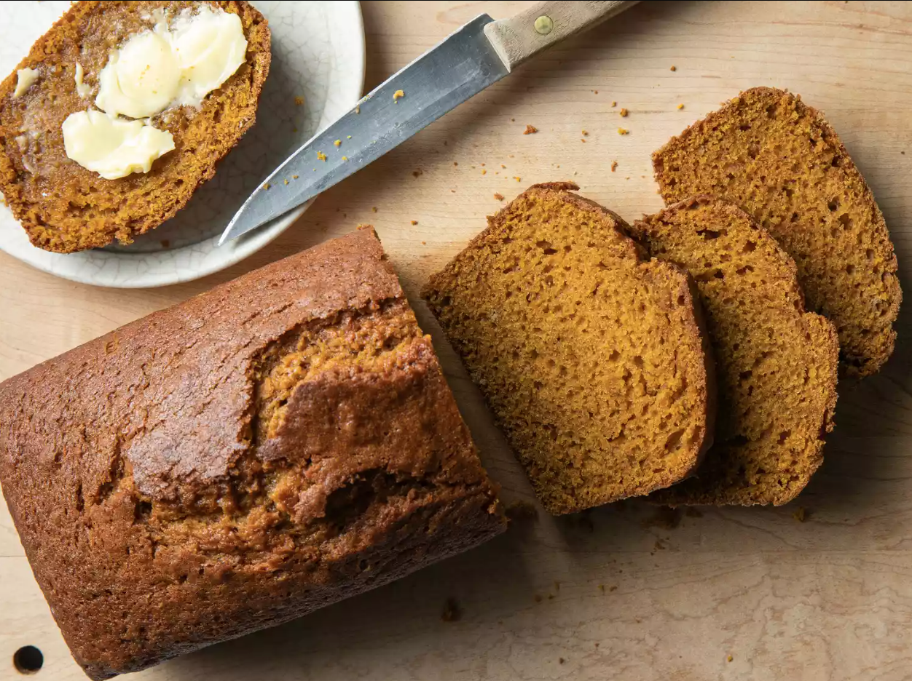

Downeast Maine Pumpkin Bread
Laurie Fontaine Bennett| Calories | Carbohydrates | Protein |
|---|---|---|
| 1 Serving: 263 | 1 Serving: 41g | 1 Serving: 3g |
| 2 Servings: 526 | 2 Servings: 82g | 2 Servings: 6g |
| 3 Servings: 789 | 3 Servings: 123g | 3 Servings: 9g |
During the cold and rainy season, or during the spooky time of Halloween, this recipe is sure to warm you up! While boxed pumpkin bread can be very alluring, and seem to be easier, the spices mixed in this homemade pumpkin bread make for a taste you can't beat and it requires very little work. Simply combine and mix! No extra work is required for this dish. It also requires no yeast for rising, which makes it all the much easier to just combine and throw into the oven. This can make for a great snack, a side, a warm pairing with some hot chocolate or coffee, or even a course at your next Thanksgiving! This recipe can also convert into pumpkin muffins, or even changed to add some chocolate chips in this mix. Yum! I highly recommend adding a dollop of butter to a nice, warm slice to get the true moistness out of the bread.
Prep Time: 15 minutes ~ Cook Time: 50 mins ~ Total Time: 1 hr 5 mins ~ Yield: 2 Loaves
Pumpkin anything is a hit during the fall season, and severely underutilized during the rainy season. This bread has been a hit with my roommates and is sure to warm up a home in no time. Over 8,000 reviews have rated this recipe 5 out of 5 stars!
Ingredients
- 1 15 ounce can pumpkin puree
- 4 eggs
- 1 cup vegetable oil
- 2/3 cup water
- 3 cups white sugar
- 3 1/2 cups all-purpose flour
- 2 teaspoons baking soda
- 1 1/2 teaspoons salt
- 1 teaspoon ground cinnamon
- 1 teaspoon ground nutmeg
- 1/2 teaspoon ground cloves
- 1/4 teaspoon ground ginger